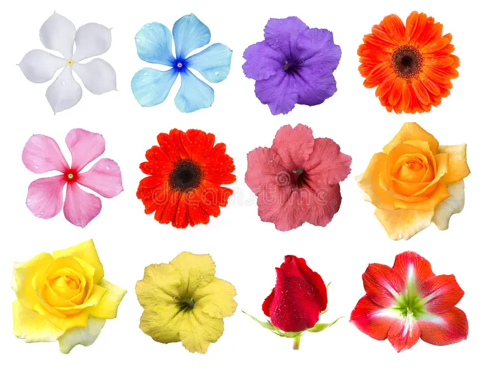

O Fascinante Mundo das Flores 🌸
As flores são muito mais do que simples enfeites da natureza — elas são estruturas especializadas para a reprodução das plantas.
Presentes principalmente nas angiospermas (plantas com flores), sua função principal é produzir sementes, garantindo a continuidade da espécie.
Como as flores funcionam?
Uma flor é formada por diferentes partes, cada uma com um papel específico:
Pétalas: coloridas e perfumadas, atraem polinizadores como abelhas, borboletas e pássaros,Sépala: protege o botão floral antes de se abrir,
Estames: parte masculina, onde o pólen é produzido, Carpelo ou pistilo: parte feminina, onde ocorre a fecundação e se forma o fruto,
Quando um polinizador transporta o pólen de uma flor para outra, ocorre a polinização, Depois, o grão de pólen fecunda o óvulo, formando a semente.
Como as flores “se alimentam”
As flores não se alimentam de forma independente — elas recebem nutrientes e água da planta por meio do caule.
A planta, por sua vez, produz seu próprio alimento através da fotossíntese, usando luz solar, água e gás carbônico para gerar
glicose (energia) e oxigênio.
O que envolve o ciclo das flores
Polinização: pode ser feita por insetos, vento, água ou até por humanos,
Fecundação: união do pólen com o óvulo,Frutificação: transformação da flor em fruto, que protege e dispersa as sementes,
Ciclo de vida: algumas flores duram apenas horas, outras permanecem por semanas ou meses.As flores são essenciais para a biodiversidade, pois sustentam cadeias alimentares, mantêm ecossistemas equilibrados e ainda encantam nossos sentidos.
Se quiser, posso criar um esquema visual simples mostrando o ciclo de vida de uma flor para facilitar o entendimento.
